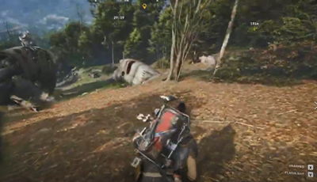
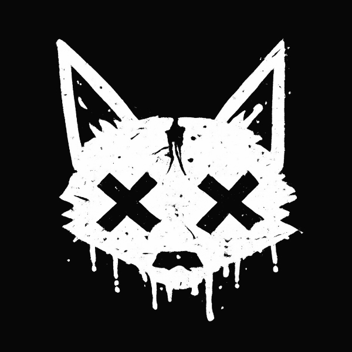

01LONG STREAM
3–6+ hours

ShadyGG StudioStory-driven video production Apply for Private BetaExperimental Mode · Private Beta
ShadyGG analyzes your gameplay and highlights the story, blueprint and director plan—so you can start editing where it matters.
Not another AI clipping tool.
ShadyGG discovers the story before the edit begins.

013–6+ hours
Deep gameplay understanding
Find the stories hidden in your stream
Structured edit plan with key moments
Smart timeline and scene direction
Premiere Pro XML export
The problem
Before you even place your first cut...
you've already spent hours
watching your own stream,
rewinding,
looking for good moments,
trying to remember where everything happened.
By the time you're ready to edit...
you're already exhausted.
ShadyGG removes the hardest part:
finding the story.
The solution
Your original gameplay stream.
Multiple AI-generated story directions.
A complete storytelling plan with pacing and structure.
Premiere XML generated from the Director plan. Designed for professional editing workflows.
Current export targetAdobe Premiere Pro
Additional editor support is under active development.
Real example
Follow a complete creator journey from a raw stream to an AI-generated editing plan.
Private beta case study
ShadyGG snapshot
Currently accepting a limited number of creators.
Rapidly evolving every week.
Adobe Premiere Pro.
Additional editors coming later.
Every workflow is refined using real creator feedback.
I personally review every submission.
I can't promise every project will be accepted, but every application will be read.
Your next story
Apply for the Private Beta and help shape the future of AI-assisted storytelling for creators.